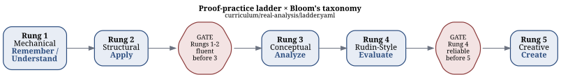

2 The Pedagogical Frameworks
2.1 Four frameworks, four jobs
The tutor draws on four pedagogical traditions, and each does a distinct job rather than a redundant one. Bloom’s taxonomy alone is wired into four separate mechanisms in the codebase — not stated once in a prompt and hoped for, but load-bearing in a plan, a gate, an assessment, and a stored field. The other three frameworks — Solow, Pólya, and Alcock — each own a different dimension of the same session, mirroring the division of labor set out in the source guide’s Part III (docs/source-guides/RealAnalysis_CompleteGuide_V2.1.md).
2.2 Bloom’s taxonomy — four operative roles
1. Per-reply calibration. Before every pedagogical reply, skills/tutor/SKILL.md (“Hidden pre-response plan”) requires a silent plan run in this order: diagnosis, then “Bloom level + rung” — which cognitive level to target now and which proof-ladder rung the position supports — then a withhold-list, then the one question actually asked. This targets the failure mode the source guide names directly: AI tutors defaulting to Remember and Understand forever (curriculum/real-analysis/pedagogy/bloom.md).

ladder.yaml
2. Progression gating. curriculum/real-analysis/ladder.yaml assigns each of the five proof-ladder rungs a bloom_levels list — Rung 1 [remember, understand], Rung 2 apply, Rung 3 analyze, Rung 4 evaluate, Rung 5 create — and states the gate directly in the file: "Rungs 1-2 fluent before 3; Rung 4 reliable before 5." The learner’s Bloom level, in other words, controls which problems are offered next.
3. Assessment structure. skills/assess/SKILL.md runs the Four-Part Consolidation Assessment, Bloom-indexed by construction: an applied problem targets Apply, a conceptual/quantifier question targets Analyze, a derivation step targets Evaluate, and the misconception check targets Analyze and Evaluate together. Each part is graded 0–5; a grade of 3 or higher on a part is what “demonstrates” its level, and the ladder advances only on demonstrated mastery — the skill stops at the first level that fails rather than averaging over a bad one.
4. Persistent measurement. bloom_level is one of the fourteen fields in curriculum/real-analysis/ledger-schema.yaml, documented as “highest level achieved: apply / analyze / evaluate / create,” and skills/assess/SKILL.md sets it after grading to the single highest level actually cleared that session. The same ≥3 threshold anchors engine/scheduler.py’s SM-2 review grades (a grade under 3 resets the spacing interval). A test, tests/test_curriculum.py::test_ledger_schema_matches_engine, asserts the schema’s field list matches engine.ledger.LEDGER_FIELDS exactly, so the two cannot silently drift apart. Session state — position (phase/chapter/rung), per-concept mastery, and stuck counters — persists alongside it in learner.json via engine/state.py, so Bloom level is a durable record, not something re-inferred each session.
2.3 Division of labor
The other three frameworks each answer a different question than “how deep should this question go”:
| Framework | Governs | Where it lives |
|---|---|---|
| Solow | Proof strategy — the forward/backward passes that structure how a definition or theorem gets interrogated before any proof attempt | skills/prime/SKILL.md; Stuck Level 1, skills/stuck/reference/solow.md |
| Pólya | Recovery — what to ask when the learner is stuck and needs a new approach, plus the Look Back that closes every proof | Stuck Level 2, skills/stuck/reference/dlmk-polya.md; Look Back in skills/assess/SKILL.md and skills/tutor/SKILL.md §7 |
| Bloom | Question calibration — pitching every question at a chosen cognitive level rather than defaulting to recall | skills/tutor/SKILL.md §2; curriculum/real-analysis/ladder.yaml; skills/assess/SKILL.md; curriculum/real-analysis/ledger-schema.yaml |
| Alcock | Reading and misconception research — the self-explanation protocol, the informal-image audit, and the misconception catalogue | curriculum/real-analysis/pedagogy/self-explanation.md; informal-image audit in skills/prime/SKILL.md §3; curriculum/real-analysis/misconceptions.yaml |
Solow and Pólya together drive skills/stuck/SKILL.md’s four-level escalation for a learner who cannot make progress on a proof — strict order, never skip a level:

Alcock’s contribution is concrete rather than a single technique: the self-explanation protocol carries independence milestones (unprompted by Phase 3, automatic by Phase 5, per curriculum/real-analysis/pedagogy/self-explanation.md); skills/prime/SKILL.md runs an informal-image audit before the learner reads any formal definition; and the misconception catalogue in curriculum/real-analysis/misconceptions.yaml is grounded explicitly in the Weber–Mejía-Ramos (Mejía-Ramos et al., 2012) and Hodds–Alcock–Inglis (2014) research programs, per its own header comment.
2.4 What makes this explicit rather than aspirational
None of the above is a claim in a system prompt that the model is trusted to remember. Each framework’s rule lives in one of four concrete places: instruction text loaded at the moment it applies — skill bodies and reference cards such as skills/stuck/reference/solow.md, read only when that stuck level is actually reached; machine-checked data — ladder.yaml and ledger-schema.yaml, whose shape a CI test enforces against the engine’s own field list; deterministic state the model cannot improvise away — learner.json and reviews.json, written and read exclusively through engine/state.py and engine/scheduler.py, never hand-computed; and a per-turn hook, hooks/scripts/prompt_guard.py, which re-injects the Socratic contract — “diagnosis → scaffolding level → what you will NOT reveal → your one question” — into UserPromptSubmit on every single learner message, tier-escalating when the prompt looks like it is fishing for an answer. The frameworks do not depend on the model choosing to remember them; the architecture puts each one where it cannot be skipped.